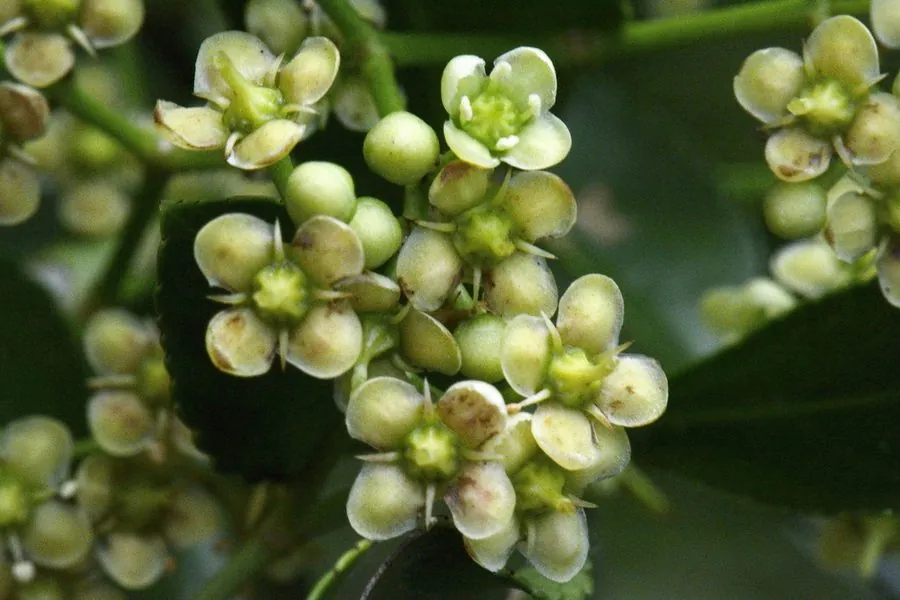

灌木与花木 · 植物界
大叶黄杨 Euonymus japonicus

卫矛科常绿灌木，叶片革质光亮，耐修剪、抗污染，是城市绿篱与造型中最常见的优良常绿树种之一。
- 分类
- 门被子植物门纲木兰纲目卫矛目科卫矛科属卫矛属
- 栖息环境
- 城市绿地、庭院与道路两旁，喜光也耐半阴
- 地理分布
- 原产日本；中国各地广泛栽培
- 保护级别
- 暂无评估；中国未列入国家重点保护野生植物名录
物种志
大叶黄杨为卫矛科卫矛属常绿灌木或小乔木，高 1–3 米，小枝绿色，具四棱。叶对生，椭圆形至倒卵形，革质，表面深绿色、有光泽，边缘具细锯齿。聚伞花序腋生，花小，黄绿色，花期 5–6 月；果实为蒴果，球形，成熟时粉红色，开裂后露出红色假种皮，果期 9–10 月。
大叶黄杨原产日本，中国各地广泛栽培，喜光，也耐半阴，耐寒性较强，适宜疏松肥沃、排水良好的土壤。它叶片革质光亮、耐修剪、抗污染，是城市绿篱与造型最常见的常绿树种之一；也常作庭院绿篱与背景材料。栽培以扦插繁殖为主，需注意防治黄杨绢野螟与介壳虫；斑叶品种还有金边、银边等类型，观赏价值更高。
形态与习性
- 株高1–3 米，小枝绿色、具四棱
- 花期5–6 月，花小、黄绿色
- 果期9–10 月，蒴果粉红色
- 光照喜光，也耐半阴
- 水分喜湿润，忌积水
- 土壤疏松肥沃、排水良好的土壤
- 主要用途城市绿篱、造型与庭院绿化
趣味知识
- 大叶黄杨虽名“黄杨”，却属于卫矛科，并非黄杨科植物。
- 它秋季结粉红色蒴果，开裂后露出鲜红色的假种皮。
- 大叶黄杨耐修剪、抗污染，是城市绿篱的常用树种。
- 金边、银边等斑叶品种观赏价值更高，常用于庭院点缀。